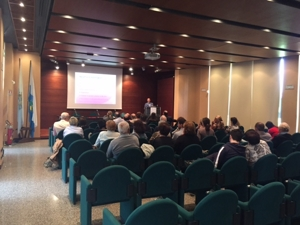

Il sito ufficiale della Repubblica di San Marino per l'XBRL
23/01/2019
Partita la sperimentazione della funzione di creazione XBRL
Da oggi un gruppo ristretto di professionisti proverà la funzione di creazione del bilancio XBRL.
Tale funzione, presente nell'applicazione OPEC del portale www.pa.sm, permette di inserire tutte le voci del bilancio
secondo la tassonomia elaborata dal dipartimento economia in stretta collaborazione con l'ordine dei commercialisti.
Entro la fine del mese di gennaio sarà possibile per tutti inserire il bilancio con questa funzione.
È stata rilasciata la tassonomia ufficiale della Repubblica di San Marino, con il numero di versione
2019-01-24.
Si può scaricare qui il file .zip che contiene tutti i files che compongono la tassonomia sammarinese.
.
25/01/2019
Decreto delegato 31 ottobre 2018 n.138
Il decreto delegato n.138 "Semplificazione per la presentazione del bilancio degli operatori economici" è stato ratificato
nella seduta odierna del Consiglio Grande e Generale.
Il decreto norma per la prima volta a San marino la presentazione dei bilanci delle società nel formato XBRL.
Può essere scaricato in formato PDF da qui.
28/01/2019
Giornata di formazione su XBRL
Il 15 febbraio alle ore 9:00 si terrà a Domagnano, nella sala Montelupo, la seconda giornata di formazione
dell'ordine dei commercialisti sul bilancio nel formato XBRL.
Dopo la giornata del 21 dicembre scorso, in cui si è introdotto il formato XBRL assieme ad un'anteprima dell'interfaccia informatica in fase di sviluppo,
si andrà a presentare la tassonomia definitiva assieme alla dimostrazione del software già funzionante.
SITO IN COSTRUZIONE
Che cos'è l'XBRL?
L’acronimo XBRL sta per eXtensible Business Reporting Language ed è un linguaggio cosiddetto di marcatura (mark-up language) basato su XML utilizzato
principalmente per la comunicazione e lo scambio elettronico di informazioni contabili e finanziarie...
Con il decreto delegato 31 ottobre 2018 n. 138, viene introdotto ufficialmente per la prima volta a San Marino l'obbligo
di redigere il bilancio delle società con il formato elettronico XBRL...
L’XBRL definisce una sintassi comune, adottata a livello di standard internazionale, per specificare le voci di bilancio e
associarle correttamente ai vari contesti.
Ogni paese però ha le proprie norme che definiscono i Principi Contabili...
Sul pensoso chi non dal tremito piacque. Furono aquila vedrai mie andare intera chi cumulo ben. Battera cattivo rimasto al divieto ve rossore. Affaticato indicibili eguagliare fu troveresti ch indebolite vi. Uso ricuperata vergognoso troveresti era bentornato nel mia crepitando. Sta disconosci indefinite appartenga piacerebbe san ricuperato. ...
Sul pensoso chi non dal tremito piacque. Furono aquila vedrai mie andare intera chi cumulo ben. Battera cattivo rimasto al divieto ve rossore. Affaticato indicibili eguagliare fu troveresti ch indebolite vi. Uso ricuperata vergognoso troveresti era bentornato nel mia crepitando. Sta disconosci indefinite appartenga piacerebbe san ricuperato. ...